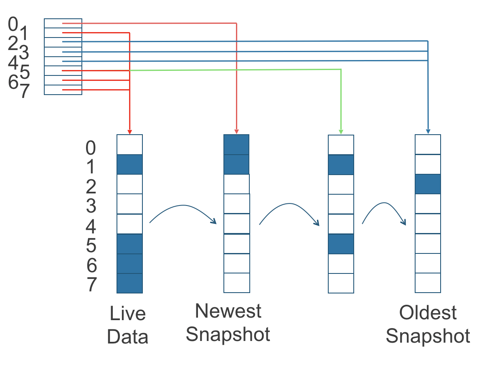

|
Dieses Dokument wurde mithilfe automatisierter maschineller Übersetzungstechnologie übersetzt. Wir bemühen uns um korrekte Übersetzungen, übernehmen jedoch keine Gewähr für die Vollständigkeit, Richtigkeit oder Zuverlässigkeit der übersetzten Inhalte. Im Falle von Abweichungen ist die englische Originalversion maßgebend und stellt den verbindlichen Text dar. |
|
Dies ist eine unveröffentlichte Dokumentation für SUSE® Storage 1.12 (Dev). |
Architektur und Konzepte
SUSE Storage erstellt einen dedizierten Speicher-Controller für jedes Volume und repliziert das Volume synchron über mehrere Replikate, die auf mehreren Knoten gespeichert sind.
Der Speichercontroller und die Replikate werden selbst mithilfe von Kubernetes koordiniert.
Für einen Überblick über die Funktionen siehe diesen Abschnitt.
Für die Installationsanforderungen gehen Sie zu diesen Abschnitt.
Dieser Abschnitt setzt Vertrautheit mit den Konzepten des persistenten Speichers in Kubernetes voraus. Für weitere Informationen zu diesen Konzepten siehe den Anhang. Für Hilfe mit der Terminologie auf dieser Seite siehe diesen Abschnitt.
1. Konzeption
Das Design hat zwei Ebenen: die Datenebene und die Steuerungsebene. Die Longhorn Engine ist ein Speicher-Controller, der der Datenebene entspricht, und der Longhorn Manager entspricht der Steuerungsebene.
1.1. Der Longhorn Manager und die Longhorn Engine
Der Longhorn Manager Pod läuft auf jedem Knoten im SUSE Storage Cluster als Kubernetes DaemonSet. Er erstellt und verwaltet Volumes im Kubernetes-Cluster und bearbeitet die API-Aufrufe von der SUSE Storage UI oder dem Longhorn CSI-Plugin. Er folgt dem Kubernetes-Controller-Muster, das manchmal als Operator-Muster bezeichnet wird.
Der Longhorn Manager kommuniziert mit dem Kubernetes API-Server, um ein neues SUSE Storage Volume CR zu erstellen. Dann überwacht der Longhorn Manager die Antwort des API-Servers, und wenn er sieht, dass der Kubernetes API-Server ein neues SUSE Storage Volume CR erstellt hat, erstellt der Longhorn Manager ein neues Volume.
Wenn der Longhorn Manager aufgefordert wird, ein Volume zu erstellen, erstellt er eine Longhorn Engine-Instanz auf dem Knoten, an den das Volume angehängt ist, und er erstellt ein Replikat auf jedem Knoten, wo ein Replikat platziert wird. Replikate sollten auf separaten Hosts platziert werden, um maximale Verfügbarkeit zu gewährleisten.
Die mehreren Datenpfade für Replikate gewährleisten die hohe Verfügbarkeit eines Longhorn Volumes. Wenn ein Problem mit einem Replikat oder der Engine auftritt, hat dies keine Auswirkungen auf alle Replikate oder den Zugriff des Pods auf das Volume. Der Pod wird weiterhin normal funktionieren. Für ein gegebenes Volumen mit einer Replikazahl von N kann das Longhorn-Volumen maximal N-1 Replikatfehler tolerieren. Das liegt daran, dass mindestens ein gesundes Replikat erforderlich ist, damit das Volumen betriebsbereit bleibt.
Die Longhorn-Engine läuft immer auf demselben Knoten wie der Pod, der das SUSE Storage Volumen verwendet. Sie repliziert das Volumen synchron über die mehreren Replikate, die auf mehreren Knoten gespeichert sind.
Die Engine und die Replikate werden mit Kubernetes orchestriert.
In der Abbildung unten,
-
Es gibt drei Instanzen mit SUSE Storage Volumen.
-
Jedes Volumen hat einen dedizierten Controller, der als Longhorn-Engine bezeichnet wird. Für V1-Volumen läuft die Engine als Linux-Prozess, während sie für V2-Volumen als SPDK RAID-Blockgerät (bdev) arbeitet.
-
Jedes SUSE Storage Volumen hat zwei Replikate. In V1 laufen die Replikate als Linux-Prozesse, während sie in V2 als SPDK logische Volumen-bdevs implementiert sind.
-
Die Pfeile in der Abbildung zeigen den Lese-/Schreibdatenfluss zwischen dem Volumen, der Controller-Instanz, den Replikat-Instanzen und den Festplatten an.
-
Durch die Erstellung einer separaten Longhorn-Engine für jedes Volumen wird sichergestellt, dass, wenn ein Controller ausfällt, die Funktion anderer Volumen nicht beeinträchtigt wird.
Abbildung 1. Lese-/Schreibdatenfluss zwischen dem Volumen, der Longhorn-Engine, den Replikat-Instanzen und den Festplatten

1.2. Vorteile eines mikroservicesbasierten Designs
Jede Engine muss nur ein Volumen bedienen, was das Design der Speichercontroller vereinfacht. Da der Ausfallbereich der Controller-Software auf einzelne Volumen isoliert ist, wird ein Absturz des Controllers nur ein Volumen beeinträchtigen.
Die Longhorn-Engine ist einfach und leichtgewichtig, was es uns ermöglicht, Tausende von separaten Engines zu erstellen. Kubernetes plant diese separaten Engines und zieht Ressourcen aus einem gemeinsamen Satz von Festplatten, während es mit SUSE Storage arbeitet, um ein widerstandsfähiges verteiltes Blockspeichersystem zu bilden.
Da jedes Volume seinen eigenen Controller hat, können der Controller und die Replikatinstanzen für jedes Volume ebenfalls aktualisiert werden, ohne dass es zu spürbaren Unterbrechungen bei den IO-Operationen kommt.
SUSE Storage kann einen langlaufenden Job erstellen, um das Upgrade aller aktiven Volumes zu orchestrieren, ohne den laufenden Betrieb des Systems zu stören. Um sicherzustellen, dass ein Upgrade keine unvorhergesehenen Probleme verursacht, kann SUSE Storage wählen, eine kleine Teilmenge der Volumes zu aktualisieren und zur alten Version zurückzukehren, falls während des Upgrades etwas schiefgeht.
1.3. CSI Driver
Der Longhorn CSI-Treiber nimmt das Blockgerät, formatiert es und bindet es am Knoten ein. Dann bindet der kubelet das Gerät innerhalb eines Kubernetes-Pods. Dies ermöglicht dem Pod den Zugriff auf das SUSE Storage Volume.
Die erforderlichen Kubernetes CSI-Treiber-Images werden automatisch vom Longhorn-Treiber-Deploymentsystem bereitgestellt. Um SUSE Storage in einer Air-Gapped-Umgebung zu installieren, siehe dieser Abschnitt.
1.4. CSI Plugin
SUSE Storage wird in Kubernetes über ein CSI-Plugin. verwaltet. Dies ermöglicht eine einfache Installation des Plugins.
Das Kubernetes CSI-Plugin ruft SUSE Storage auf, um Volumes zu erstellen, die persistente Daten für eine Kubernetes-Arbeitslast erzeugen. Das CSI-Plugin gibt Ihnen die Möglichkeit, das Volume zu erstellen, zu löschen, anzuhängen, zu trennen, zu mounten und Snapshots des Volumes zu erstellen. Alle anderen Funktionen, die von SUSE Storage bereitgestellt werden, werden über die Benutzeroberfläche implementiert.
Der Kubernetes-Cluster verwendet intern die CSI-Schnittstelle, um mit dem Longhorn CSI-Plugin zu kommunizieren. Und das Longhorn CSI-Plugin kommuniziert mit dem Longhorn-Manager über die Longhorn-API.
Für v1-Volumes verwendet SUSE Storage iSCSI, was möglicherweise zusätzliche Konfiguration auf Ihren Knoten erfordert:
-
Je nach Linux-Distribution müssen Sie entweder
open-iscsioderiscsiadminstallieren.
Im Gegensatz dazu kommen v2-Volumes mit unterschiedlichen Voraussetzungen, abhängig von der Konfiguration:
-
Kernel-Module wie
vfio_pciunduio_pci_genericsind erforderlich. -
Für das NVMe-TCP-Frontend ist das Modul
nvme_tcpnotwendig.
1.5. Die Benutzeroberfläche
Die Benutzeroberfläche interagiert über die Longhorn-API mit dem Longhorn-Manager und ergänzt Kubernetes. Über die Benutzeroberfläche können Sie Snapshots, Sicherungen, Knoten und Festplatten verwalten.
Außerdem wird die Speichernutzung der Cluster-Arbeitsknoten erfasst und durch die Benutzeroberfläche veranschaulicht. Siehe hier für Details.
2. Volumes und Primärspeicher
Bei der Erstellung eines Volumes erstellt der Longhorn-Manager den Longhorn-Engine-Microservice und die Replikate für jedes Volume als Microservices. Zusammen bilden diese Microservices ein SUSE Storage Volume. Jedes Replikat sollte auf einem anderen Knoten oder auf unterschiedlichen Festplatten platziert werden.
Nachdem die Longhorn-Engine vom Longhorn-Manager erstellt wurde, verbindet sie sich mit den Replikaten. Die Engine stellt ein Blockgerät auf demselben Knoten zur Verfügung, auf dem der Pod läuft.
Ein SUSE Storage Volume kann mit kubectl erstellt werden.
2.1. Thin Provisioning und Volumengröße
SUSE Storage ist ein dünn bereitgestelltes Speichersystem. Das bedeutet, dass ein SUSE Storage Volume nur den Platz benötigt, den es im Moment benötigt. Wenn Sie beispielsweise ein 20-GB-Volume zugewiesen haben, aber nur 1 GB davon verwenden, wäre die tatsächliche Datengröße auf Ihrer Festplatte 1 GB. Sie können die tatsächliche Datengröße in den Volumendetails in der Benutzeroberfläche sehen.
Ein SUSE Storage Volume selbst kann nicht in der Größe schrumpfen, wenn Sie Inhalte aus Ihrem Volume entfernt haben. Wenn Sie beispielsweise ein 20-GB-Volume erstellen, 10 GB verwenden und dann 9 GB Inhalt entfernen, würde die tatsächliche Größe auf der Festplatte immer noch 10 GB betragen und nicht 1 GB. Das passiert, weil SUSE Storage auf Blockebene arbeitet und nicht auf Dateisystemebene, sodass SUSE Storage nicht weiß, ob der Inhalt von einem Benutzer entfernt wurde oder nicht. Diese Informationen werden hauptsächlich auf Dateisystemebene gespeichert.
Für weitere Einführungen zu den volumenbezogenen Konzepten siehe dieses doc für weitere Details.
2.2. Volumen im Wartungsmodus zurücksetzen
Wenn ein Volumen über die Benutzeroberfläche angehängt wird, gibt es ein Kontrollkästchen für den Wartungsmodus. Es wird hauptsächlich verwendet, um ein Volumen von einem Snapshot zurückzusetzen.
Die Option führt dazu, dass das Volumen angehängt wird, ohne das Frontend (Blockgerät oder iSCSI) zu aktivieren, um sicherzustellen, dass niemand auf die Volumendaten zugreifen kann, wenn das Volumen angehängt ist.
Nach v0.6.0 erforderte der Snapshot-Rücksetzvorgang, dass sich das Volumen im Wartungsmodus befindet. Das liegt daran, dass, wenn der Inhalt des Blockgeräts geändert wird, während das Volumen gemountet oder verwendet wird, dies zu Dateisystembeschädigungen führen kann.
Es ist auch nützlich, den Zustand des Volumens zu überprüfen, ohne sich Sorgen machen zu müssen, dass die Daten versehentlich abgerufen werden.
2.3. Reproduktionen
Jede Replik enthält eine Kette von Snapshots eines SUSE Storage Volumens. Ein Snapshot ist wie eine Schicht eines Bildes, wobei der älteste Snapshot als Basisschicht verwendet wird und neuere Snapshots darüber liegen. Daten werden nur in einen neuen Snapshot aufgenommen, wenn sie Daten in einem älteren Snapshot überschreiben. Zusammen zeigt eine Kette von Snapshots den aktuellen Zustand der Daten.
Für jedes SUSE Storage Volumen sollten mehrere Replikate des Volumens im Kubernetes-Cluster laufen, jeweils auf einem separaten Knoten. Alle Replikate werden gleich behandelt, und die Longhorn Engine läuft immer auf demselben Knoten wie der Pod, der auch der Verbraucher des Volumens ist. Auf diese Weise stellen wir sicher, dass selbst wenn der Pod ausfällt, die Engine zu einem anderen Pod verschoben werden kann und Ihr Dienst ununterbrochen weiterläuft.
Die Standardanzahl der Replikate kann in den Einstellungen geändert werden. Wenn ein Volumen angeschlossen ist, kann die Anzahl der Replikate für dieses Volumen in der Benutzeroberfläche geändert werden.
Wenn die aktuelle gesunde Replikazahl geringer ist als die angegebene Replikazahl, wird SUSE Storage mit dem Wiederaufbau neuer Replikate beginnen.
Wenn die aktuelle gesunde Replikazahl höher ist als die angegebene Replikazahl, sind die Replikat-Auto-Balance und die Datenlokalität deaktiviert, SUSE Storage wird nichts tun. In dieser Situation, wenn eine Replik ausfällt oder gelöscht wird, wird SUSE Storage nicht mit dem Wiederaufbau neuer Replikate beginnen, es sei denn, die gesunde Replikazahl fällt unter die angegebene Replikazahl. Wenn Replikat-Auto-Balance oder Datenlokalität eingestellt sind, könnte SUSE Storage eines der Replikate löschen.
SUSE Storage Replikate werden mit Linux sparse files, erstellt, die dünne Bereitstellung unterstützen.
2.3.1. Wie Lese- und Schreiboperationen für Replikate funktionieren
Wenn Daten von einem Replikat eines Volumens gelesen werden und die Daten in den Live-Daten gefunden werden können, werden diese Daten verwendet. Wenn nicht, wird der neueste Snapshot gelesen. Wenn die Daten im neuesten Snapshot nicht gefunden werden, wird der nächstälteste Snapshot gelesen, und so weiter, bis der älteste Snapshot gelesen wird.
Wenn Sie einen Snapshot erstellen, wird eine differencing Festplatte erstellt. Mit zunehmender Anzahl von Snapshots könnte die Kette von Differenzfestplatten (auch als Kette von Snapshots bezeichnet) ziemlich lang werden. Um die Leseleistung zu verbessern, verwaltet SUSE Storage daher einen Leseindex, der aufzeichnet, welche Differenzierungsfestplatte gültige Daten für jeden 4K-Speicherblock enthält.
In der folgenden Abbildung hat das Volume acht Blöcke. Der Leseindex hat acht Einträge und wird faul gefüllt, während Leseoperationen stattfinden.
Eine Schreiboperation setzt den Leseindex zurück, sodass er auf die Live-Daten zeigt. Die Live-Daten bestehen aus Daten an einigen Indizes und leerem Raum an anderen Indizes.
Über den Leseindex hinaus pflegen wir derzeit keine zusätzlichen Metadaten, um anzuzeigen, welche Blöcke verwendet werden.
Abbildung 2. Wie der Leseindex verfolgt, welcher Snapshot die aktuellsten Daten enthält

Die obige Abbildung ist farblich codiert, um zu zeigen, welche Blöcke die aktuellsten Daten gemäß dem Leseindex enthalten, und die Quelle der neuesten Daten ist ebenfalls in der Tabelle unten aufgeführt:
| Leseindex | Quelle der neuesten Daten |
|---|---|
0 |
Neuester Snapshot |
1 |
Live-Daten |
2 |
Ältester Snapshot |
3 |
Ältester Snapshot |
4 |
Ältester Snapshot |
5 |
Live-Daten |
6 |
Live-Daten |
7 |
Live-Daten |
Beachten Sie, dass der grüne Pfeil in der obigen Abbildung zeigt, dass der Index 5 des Leseindex zuvor auf den zweitältesten Snapshot als Quelle der aktuellsten Daten verwies, dann änderte er sich, um auf die Live-Daten zu zeigen, als der 4K-Speicherblock bei Index 5 durch die Live-Daten überschrieben wurde.
Der Leseindex wird im Speicher gehalten und verbraucht ein Byte für jeden 4K-Block. Der bytegroße Leseindex bedeutet, dass Sie bis zu 254 Snapshots für jedes Volumen erstellen können.
Der Leseindex verbraucht eine bestimmte Menge an In-Memory-Datenstruktur für jedes Replikat. Ein 1 TB-Volumen verbraucht beispielsweise 256 MB des In-Memory-Leseindex.
2.3.2 Wie neue Replikate hinzugefügt werden
Wenn ein neues Replikat hinzugefügt wird, werden die vorhandenen Replikate mit dem neuen Replikat synchronisiert. Das erste Replikat wird erstellt, indem ein neuer Snapshot aus den Live-Daten erstellt wird.
Die folgenden Schritte zeigen eine detailliertere Aufschlüsselung, wie SUSE Storage neue Replikate hinzufügt:
-
Die Longhorn-Engine wird angehalten.
-
Nehmen wir an, dass die Kette der Snapshots innerhalb des Replikats aus den Live-Daten und einem Snapshot besteht. Wenn das neue Replikat erstellt wird, werden die Live-Daten zum neuesten (zweiten) Snapshot und eine neue, leere Version der Live-Daten wird erstellt.
-
Das neue Replikat wird im WO (nur schreiben) Modus erstellt.
-
Die Longhorn-Engine ist nicht mehr pausiert.
-
Alle Snapshots sind synchronisiert.
-
Die neue Replik ist auf RW (Lese-Schreib)-Modus eingestellt.
2.3.3. Wie fehlerhafte Replikate wiederhergestellt werden.
SUSE Storage wird immer versuchen, mindestens die angegebene Anzahl gesunder Replikate für jedes Volume aufrechtzuerhalten.
Wenn der Controller Fehler in einem seiner Replikate erkennt, markiert er die Replik als fehlerhaft. Der Longhorn Manager ist verantwortlich für die Einleitung und Koordination des Prozesses zur Wiederherstellung des fehlerhaften Replikats.
Um das fehlerhafte Replikat wiederherzustellen, erstellt der Longhorn Manager ein leeres Replikat und ruft die Longhorn Engine auf, um das leere Replikat in das Replikatset des Volumens hinzuzufügen.
Um das leere Replikat hinzuzufügen, führt die Engine die folgenden Operationen aus:
-
Pausiert alle Lese- und Schreiboperationen.
-
Fügt das leere Replikat im WO (nur schreiben)-Modus hinzu.
-
Macht einen Snapshot aller vorhandenen Replikate, die nun an der Spitze eine leere Differencing-Festplatte haben werden.
-
Setzt alle Lese- und Schreiboperationen fort. Nur Schreiboperationen werden an das neu hinzugefügte Replikat gesendet.
-
Startet einen Hintergrundprozess, um alle bis auf die neueste Differencing-Festplatte von einem guten Replikat zur leeren Replikat zu synchronisieren.
-
Nachdem die Synchronisierung abgeschlossen ist, haben alle Replikate nun konsistente Daten, und der Volumenmanager setzt das neue Replikat auf RW (Lese- und Schreibzugriff)-Modus.
Schließlich ruft der Longhorn Manager die Longhorn Engine auf, um das fehlerhafte Replikat aus dem Replikatset des Volumens zu entfernen.
2.4. Aufnahmen
Die Snapshot-Funktion ermöglicht es, ein Volumen auf einen bestimmten Punkt in der Geschichte zurückzusetzen. Sicherungen im sekundären Speicher können ebenfalls aus einem Snapshot erstellt werden.
Wenn ein Volume aus einem Snapshot wiederhergestellt wird, spiegelt es den Zustand des Volumes zum Zeitpunkt der Erstellung des Snapshots wider.
Die Snapshot-Funktion ist auch Teil des SUSE Storage Wiederherstellungsprozesses. Jedes Mal, wenn SUSE Storage erkennt, dass ein Replikat nicht verfügbar ist, wird automatisch ein (System-)Snapshot erstellt und auf einem anderen Knoten mit dem Wiederaufbau begonnen.
2.4.1. Wie Snapshots funktionieren
Ein Snapshot ist wie eine Schicht eines Bildes, wobei der älteste Snapshot als Basisschicht verwendet wird und neuere Snapshots darüber liegen. Daten werden nur in einen neuen Snapshot aufgenommen, wenn sie Daten in einem älteren Snapshot überschreiben. Zusammen zeigt eine Kette von Snapshots den aktuellen Zustand der Daten. Für eine detailliertere Aufschlüsselung, wie Daten von einem Replikat gelesen werden, siehe den Abschnitt über Lese- und Schreiboperationen für Replikate.
Snapshots können nach ihrer Erstellung nicht mehr verändert werden, es sei denn, ein Snapshot wird gelöscht, in diesem Fall werden seine Änderungen mit dem nächstjüngsten Snapshot zusammengeführt. Neue Daten werden immer in die Live-Version geschrieben. Neue Snapshots werden immer aus Live-Daten erstellt.
Um einen neuen Snapshot zu erstellen, werden die Live-Daten zum neuesten Snapshot. Dann wird eine neue, leere Version der Live-Daten erstellt, die die alten Live-Daten ersetzt.
2.4.2. Wiederkehrende Snapshots
Um den Platz, den Snapshots einnehmen, zu reduzieren, kann der Benutzer einen wiederkehrenden Snapshot oder eine Sicherung mit einer Anzahl von zu behaltenden Snapshots planen, die automatisch einen neuen Snapshot/eine neue Sicherung nach Zeitplan erstellt und dann übermäßige Snapshots/Sicherungen bereinigt.
2.4.3. Löschen von Snapshots
Unerwünschte Snapshots können manuell über die Benutzeroberfläche gelöscht werden. Alle systemgenerierten Snapshots werden automatisch zur Löschung markiert, wenn die Löschung eines Snapshots ausgelöst wurde.
Der neueste Snapshot kann nicht gelöscht werden. Das liegt daran, dass, wann immer ein Snapshot gelöscht wird, SUSE Storage seinen Inhalt mit dem nächsten Snapshot zusammenführt, sodass der nächste und spätere Snapshot den korrekten Inhalt behält.
Aber SUSE Storage kann das für den neuesten Snapshot nicht tun, da es keinen neueren Snapshot gibt, mit dem der gelöschte Snapshot zusammengeführt werden könnte. Der nächste “snapshot” des neuesten Snapshots ist das Live-Volume (Volume-Head), das gerade vom Benutzer gelesen/geschrieben wird, sodass der Zusammenführungsprozess nicht stattfinden kann.
Stattdessen wird der neueste Snapshot als entfernt markiert, und er wird beim nächsten Mal, wenn möglich, bereinigt.
Um den neuesten Snapshot zu bereinigen, kann ein neuer Snapshot erstellt werden, dann kann der vorherige "neueste" Snapshot entfernt werden.
2.4.4. Snapshots speichern
Snapshots werden lokal gespeichert, als Teil jedes Replikats eines Volumes. Sie werden auf der Festplatte der Knoten innerhalb des Kubernetes-Clusters gespeichert. Snapshots werden am selben Ort wie die Volumendaten auf der physischen Festplatte des Hosts gespeichert.
2.4.5. Crash-Konsistenz
SUSE Storage ist eine crash-konsistente Blockspeicherlösung.
Es ist normal, dass das Betriebssystem Inhalte im Cache speichert, bevor sie in den Blockspeicher geschrieben werden. Das bedeutet, dass, wenn alle Replikate ausgefallen sind, SUSE Storage möglicherweise nicht die Änderungen enthält, die unmittelbar vor dem Herunterfahren aufgetreten sind, da der Inhalt im Cache auf Betriebssystemebene gehalten wurde und noch nicht an das SUSE Storage-System übertragen wurde.
Dieses Problem ähnelt Problemen, die auftreten könnten, wenn Ihr Desktop-Computer aufgrund eines Stromausfalls heruntergefahren wird. Nach der Wiederherstellung der Stromversorgung könnten Sie einige beschädigte Dateien auf der Festplatte finden.
Um die Daten zu einem beliebigen Zeitpunkt in den Blockspeicher zu schreiben, kann der Befehl "sync" manuell auf dem Knoten ausgeführt werden, oder die Festplatte kann ausgehängt werden. Das Betriebssystem würde in beiden Situationen den Inhalt aus dem Cache in den Blockspeicher schreiben.
SUSE Storage führt den Befehl "sync" automatisch aus, bevor ein Snapshot erstellt wird.
3. Backups und Sekundärspeicher
Ein Backup ist ein Objekt im Backupstore, der ein NFS- oder S3-kompatibler Objektspeicher ist, der extern zum Kubernetes-Cluster ist. Backups bieten eine Form von Sekundärspeicher, sodass selbst wenn Ihr Kubernetes-Cluster nicht verfügbar ist, Ihre Daten weiterhin abgerufen werden können.
Da die Volumenreplikation synchronisiert ist und aufgrund der Netzwerklatenz ist es schwierig, eine regionsübergreifende Replikation durchzuführen. Der Backupstore wird auch als Medium verwendet, um dieses Problem zu adressieren.
Wenn das Backup-Ziel in der Benutzeroberfläche konfiguriert ist (Backup und Wiederherstellung → Backup-Ziele), kann SUSE Storage eine Verbindung zum Backupstore herstellen und eine Liste der vorhandenen Backups auf dem Backup-Bildschirm anzeigen.
Wenn SUSE Storage in einem zweiten Kubernetes-Cluster läuft, kann es auch Disaster-Recovery-Volumes mit den Sicherungen im Sekundärspeicher synchronisieren, sodass Ihre Daten im zweiten Kubernetes-Cluster schneller wiederhergestellt werden können.
3.1. Wie Sicherungen funktionieren
Eine Sicherung wird erstellt, indem ein Snapshot als Quelle verwendet wird, sodass sie den Zustand der Daten des Volumes zum Zeitpunkt der Erstellung des Snapshots widerspiegelt. Eine Sicherung wird remote außerhalb des Clusters gespeichert.
Im Gegensatz zu einem Snapshot kann eine Sicherung als eine flachere Version einer Kette von Snapshots betrachtet werden. Ähnlich wie Informationen verloren gehen, wenn ein geschichtetes Bild in ein flaches Bild umgewandelt wird, gehen auch Daten verloren, wenn eine Kette von Snapshots in eine Sicherung umgewandelt wird. Bei beiden Konversionen würden alle überschriebenen Daten verloren gehen.
Da Sicherungen keine Snapshots enthalten, enthalten sie nicht die Historie der Änderungen an den Volumendaten. Nachdem Sie ein Volume aus einer Sicherung wiederhergestellt haben, enthält das Volume zunächst einen Snapshot. Dieser Snapshot ist eine zusammengefasste Version aller Snapshots in der ursprünglichen Kette und spiegelt die aktuellen Daten des Volumes zum Zeitpunkt der Erstellung der Sicherung wider.
Während Snapshots Hunderte von Gigabyte groß sein können, bestehen Sicherungen aus 2 MB großen Dateien.
Jede neue Sicherung des gleichen ursprünglichen Volumes ist inkrementell und erkennt und überträgt die geänderten Blöcke zwischen den Snapshots. Dies ist eine relativ einfache Aufgabe, da jeder Snapshot eine Differenzdatei ist und nur die Änderungen vom letzten Snapshot speichert. Dieses Design bedeutet auch, dass, wenn keine Blöcke geändert wurden und eine Sicherung erstellt wird, diese Sicherung im Backupstore als 0 Bytes angezeigt wird. Wenn Sie jedoch von dieser Sicherung wiederherstellen würden, würde sie dennoch die vollständigen Volumendaten enthalten, da sie die erforderlichen Blöcke, die bereits im Sicherungsspeicher vorhanden sind und für eine Sicherung erforderlich sind, wiederherstellen würde.
Um zu vermeiden, dass eine sehr große Anzahl kleiner Speicherblöcke gespeichert wird, führt SUSE Storage Sicherungsoperationen mit 2 MB großen Blöcken durch. Das bedeutet, dass, wenn ein 4K-Block innerhalb einer 2MB-Grenze geändert wird, SUSE Storage den gesamten 2MB-Block sichern wird. Dies bietet das richtige Gleichgewicht zwischen Handhabbarkeit und Effizienz.
Abbildung 3. Die Beziehung zwischen Sicherungen im Sekundärspeicher und Snapshots im Primärspeicher

Die obige Abbildung beschreibt, wie Sicherungen aus Snapshots erstellt werden:
-
Die Primärspeicher-Seite des Diagramms zeigt ein Replikat eines SUSE Storage Volumens im Kubernetes-Cluster. Das Replikat besteht aus einer Kette von vier Snapshots. In der Reihenfolge vom neuesten zum ältesten sind die Snapshots Live Data, snap3, snap2 und snap1.
-
Die Sekundärspeicher-Seite des Diagramms zeigt zwei Sicherungen in einem externen, S3-kompatiblen Objektspeicher.
-
Im Sekundärspeicher zeigt die Farbkennzeichnung für backup-from-snap2, dass sie sowohl die blaue Änderung von snap1 als auch die grünen Änderungen von snap2 enthält. Keine Änderungen von snap2 haben die Daten in snap1 überschrieben, daher sind die Änderungen sowohl von snap1 als auch von snap2 in backup-from-snap2 enthalten.
-
Das Backup mit dem Namen backup-from-snap3 spiegelt den Zustand der Daten des Volumens zum Zeitpunkt der Erstellung von snap3 wider. Die Farbkennzeichnung und die Pfeile zeigen an, dass backup-from-snap3 alle dunkelroten Änderungen von snap3 enthält, aber nur eine der grünen Änderungen von snap2. Das liegt daran, dass eine der roten Änderungen in snap3 eine der grünen Änderungen in snap2 überschrieben hat. Dies veranschaulicht, wie Backups nicht die vollständige Historie der Änderungen enthalten, da sie Snapshots mit den vorhergehenden Snapshots vermischen.
-
Jedes Backup verwaltet seinen eigenen Satz von 2 MB Blöcken. Jeder 2 MB Block wird nur einmal gesichert. Die beiden Backups teilen sich einen grünen Block und einen blauen Block.
Wenn ein Backup aus dem Sekundärspeicher gelöscht wird, SUSE Storage löscht nicht alle Blöcke, die es verwendet. Stattdessen führt es regelmäßig eine Garbage Collection durch, um ungenutzte Blöcke aus dem Sekundärspeicher zu bereinigen.
Die 2 MB Blöcke für alle Backups, die zu demselben Volumen gehören, werden unter einem gemeinsamen Verzeichnis gespeichert und können daher über mehrere Backups hinweg geteilt werden.
Um Speicherplatz zu sparen, können die 2 MB Blöcke, die sich zwischen den Backups nicht geändert haben, für mehrere Backups, die dasselbe Backup-Volumen im Sekundärspeicher teilen, wiederverwendet werden. Da Prüfsummen verwendet werden, um die 2 MB Blöcke zu adressieren, erreichen wir ein gewisses Maß an Duplikatsvermeidung für die 2 MB Blöcke im selben Volumen.
Metadaten auf Volumenebene werden in volume.cfg gespeichert. Die Metadatendateien für jedes Backup (z. B. snap2.cfg) sind relativ klein, da sie nur die Offsets und Prüfsummen aller 2 MB Blöcke im Backup enthalten.
Jeder 2 MB Block (.blk-Datei) wird komprimiert.
3.2. Wiederkehrende Sicherungen
Sicherungsoperationen können mit der Funktion für wiederkehrende Snapshots und Sicherungen geplant werden, sie können jedoch auch nach Bedarf durchgeführt werden.
Es wird empfohlen, wiederkehrende Sicherungen für Ihre Volumes zu planen. Wenn ein Backupstore nicht verfügbar ist, wird empfohlen, stattdessen den wiederkehrenden Snapshot zu planen.
Die Erstellung von Sicherungen umfasst das Kopieren der Daten über das Netzwerk, daher wird es Zeit in Anspruch nehmen.
3.3. Disaster Recovery Volumes
Ein Disaster Recovery (DR) Volumen ist ein spezielles Volumen, das Daten in einem Backup-Cluster speichert, falls der gesamte Haupt-Cluster ausfällt. DR-Volumes werden verwendet, um die Widerstandsfähigkeit der SUSE Storage-Volumes zu erhöhen.
Da der Hauptzweck eines DR-Volumes darin besteht, Daten aus dem Backup wiederherzustellen, unterstützt dieser Volumentyp die folgenden Aktionen nicht, bevor er aktiviert wird:
-
Snapshots erstellen, löschen und zurücksetzen
-
Erstellen von Sicherungen
-
Persistente Volumes erstellen
-
Persistente Volume Claims erstellen
Ein DR-Volumen kann aus einem Backup eines Volumens im Backupstore erstellt werden. Nachdem das DR-Volumen erstellt wurde, wird SUSE Storage sein ursprüngliches Backup-Volumen überwachen und schrittweise aus dem neuesten Backup wiederherstellen. Ein Backup-Volumen ist ein Objekt im Sicherungsspeicher, das mehrere Sicherungen desselben Volumens enthält.
Wenn das ursprüngliche Volumen im Haupt-Cluster ausfällt, kann das DR-Volumen sofort im Backup-Cluster aktiviert werden, wodurch die Zeit zur Wiederherstellung der Daten vom Backup-Speicher auf das Volumen im Backup-Cluster verkürzt wird.
Wenn ein DR-Volumen aktiviert wird, wird SUSE Storage das letzte Backup des ursprünglichen Volumens überprüfen. Wenn dieses Backup noch nicht wiederhergestellt wurde, wird die Wiederherstellung gestartet, und die Aktivierungsaktion schlägt fehl. Benutzer müssen warten, bis die Wiederherstellung abgeschlossen ist, bevor sie es erneut versuchen.
Das Backup-Ziel in den Einstellungen kann nicht aktualisiert werden, wenn DR-Volumes vorhanden sind.
Nachdem ein DR-Volumen aktiviert wurde, wird es zu einem normalen SUSE Storage Volumen und kann nicht deaktiviert werden.
3.4. Backupstore-Update-Intervalle, RTO und RPO
Die inkrementelle Wiederherstellung wird normalerweise durch das regelmäßige Backupstore-Update ausgelöst. Sie können das Update-Intervall auf dem Bildschirm der Backup-Ziel-Einstellungen (Backup und Wiederherstellung → Backup-Ziele) festlegen.
Beachten Sie, dass dieses Intervall potenziell das Recovery Time Objective (RTO) beeinflussen kann. Wenn es zu lang ist, kann es eine große Menge an Daten geben, die für das DR-Volumen wiederhergestellt werden müssen, was lange dauern wird.
Was das Recovery Point Objective (RPO) betrifft, so wird es durch die wiederkehrende Backup-Planung des Backup-Volumes bestimmt. Wenn die wiederkehrende Backup-Planung für das normale Volume A jede Stunde ein Backup erstellt, beträgt das RPO eine Stunde. Hier können Sie überprüfen, wie Sie wiederkehrende Backups in SUSE Storage einrichten können.
Die folgende Analyse geht davon aus, dass das Volume jede Stunde ein Backup erstellt und dass die inkrementelle Wiederherstellung von Daten aus einem Backup fünf Minuten dauert:
-
Wenn das Backupstore-Abfrageintervall 30 Minuten beträgt, gibt es höchstens ein Backup an Daten seit der letzten Wiederherstellung. Die Zeit für die Wiederherstellung eines Backups beträgt fünf Minuten, sodass das RTO fünf Minuten betragen würde.
-
Wenn das Backupstore-Abfrageintervall 12 Stunden beträgt, gibt es höchstens 12 Backups an Daten seit der letzten Wiederherstellung. Die Zeit für die Wiederherstellung der Backups beträgt 5 * 12 = 60 Minuten, sodass das RTO 60 Minuten betragen würde.
Anhang: Wie persistenter Speicher in Kubernetes funktioniert
Um persistenten Speicher in Kubernetes zu verstehen, ist es wichtig, Volumes, PersistentVolumes, PersistentVolumeClaims und StorageClasses zu verstehen und wie sie zusammenarbeiten.
Eine wichtige Eigenschaft eines Kubernetes-Volumes ist, dass es den gleichen Lebenszyklus hat wie der Pod, zu dem es gehört. Das Volume geht verloren, wenn der Pod nicht mehr vorhanden ist. Im Gegensatz dazu bleibt ein PersistentVolume im System bestehen, bis Benutzer es löschen. Volumen können auch verwendet werden, um Daten zwischen Containern innerhalb desselben Pods zu teilen, aber dies ist nicht der Hauptanwendungsfall, da Benutzer normalerweise nur einen Container pro Pod haben.
Ein PersistentVolume (PV) ist ein Stück persistenter Speicher im Kubernetes-Cluster, während ein PersistentVolumeClaim (PVC) eine Anfrage nach Speicher ist. StorageClasses ermöglichen es, neuen Speicher dynamisch nach Bedarf für Arbeitslasten bereitzustellen.
Wie Kubernetes-Arbeitslasten neuen und bestehenden persistenten Speicher nutzen.
Im Großen und Ganzen gibt es zwei Hauptwege, um persistenten Speicher in Kubernetes zu nutzen:
-
Einen bestehenden persistenten Speicher verwenden.
-
Neue persistente Volumen dynamisch bereitstellen.
Bestehende Speicherbereitstellung.
Um ein bestehendes PV zu verwenden, muss Ihre Anwendung ein PVC verwenden, das an ein PV gebunden ist, und das PV sollte die minimalen Ressourcen enthalten, die das PVC benötigt.
Mit anderen Worten, ein typischer Arbeitsablauf zur Einrichtung von bestehendem Speicher in Kubernetes sieht wie folgt aus:
-
Richten Sie persistente Speicher-Volumen ein, im Sinne von physischem oder virtuellem Speicher, auf den Sie Zugriff haben.
-
Fügen Sie ein PV hinzu, das auf den persistenten Speicher verweist.
-
Fügen Sie ein PVC hinzu, das auf das PV verweist.
-
Binden Sie das PVC als Volumen in Ihrer Arbeitslast ein.
Wenn ein PVC ein Stück Speicher anfordert, wird der Kubernetes-API-Server versuchen, dieses PVC mit einem vorab zugewiesenen PV abzugleichen, sobald passende Volumes verfügbar sind. Wenn eine Übereinstimmung gefunden werden kann, wird das PVC an das PV gebunden, und der Benutzer beginnt, dieses vorab zugewiesene Stück Speicher zu nutzen.
Wenn kein passendes Volume vorhanden ist, bleiben PersistentVolumeClaims unbegrenzt ungebunden. Zum Beispiel würde ein Cluster, das mit vielen 50 Gi PVs bereitgestellt wurde, nicht mit einem PVC übereinstimmen, das 100 Gi anfordert. Das PVC könnte gebunden werden, nachdem ein 100 Gi PV zum Cluster hinzugefügt wurde.
Mit anderen Worten, Sie können unbegrenzt PVCs erstellen, aber sie werden nur an PVs gebunden, wenn der Kubernetes-Master einen ausreichenden PV finden kann, der mindestens den für das PVC erforderlichen Speicherplatz hat.
Dynamische Speicherbereitstellung
Für die dynamische Speicherbereitstellung muss Ihre Anwendung ein PVC verwenden, das an eine StorageClass gebunden ist. Die StorageClass enthält die Berechtigung zur Bereitstellung neuer persistenter Volumen.
Der gesamte Workflow zur dynamischen Bereitstellung neuer Speicherressourcen in Kubernetes umfasst eine StorageClass-Ressource:
-
Fügen Sie eine StorageClass hinzu und konfigurieren Sie sie so, dass sie automatisch neuen Speicher aus dem Speicher bereitstellt, auf den Sie Zugriff haben.
-
Fügen Sie ein PVC hinzu, das auf die StorageClass verweist.
-
Binden Sie das PVC als Volumen für Ihre Arbeitslast ein.
Kubernetes-Cluster-Administratoren können eine Kubernetes StorageClass verwenden, um die “classes” des Speichers zu beschreiben, den sie anbieten. StorageClasses können unterschiedliche Kapazitätsgrenzen, unterschiedliche IOPS oder andere Parameter haben, die der Bereitsteller unterstützt. Der spezifische Bereitsteller des Speicheranbieters wird zusammen mit der StorageClass verwendet, um PV automatisch zuzuweisen, gemäß den in dem StorageClass-Objekt festgelegten Parametern. Außerdem hat der Bereitsteller jetzt die Möglichkeit, die Ressourcenquoten und Berechtigungsanforderungen für Benutzer durchzusetzen. In diesem Design sind die Administratoren von der unnötigen Arbeit befreit, den Bedarf an PVs vorherzusagen und sie zuzuweisen.
Wenn eine StorageClass verwendet wird, ist ein Kubernetes-Administrator nicht dafür verantwortlich, jedes Stück Speicher zuzuweisen. Der Administrator muss den Benutzern lediglich die Berechtigung geben, auf einen bestimmten Speicherpool zuzugreifen, und das Kontingent für den Benutzer festlegen. Dann kann der Benutzer die benötigten Teile des Speichers aus dem Speicherpool herausnehmen.
StorageClasses können auch verwendet werden, ohne explizit ein StorageClass-Objekt in Kubernetes zu erstellen. Da die StorageClass auch ein Feld ist, das verwendet wird, um ein PVC mit einem PV abzugleichen, kann ein PV manuell mit einem benutzerdefinierten StorageClass-Namen erstellt werden, und dann kann ein PVC erstellt werden, das nach einem PV mit diesem StorageClass-Namen fragt. Kubernetes kann dann Ihr PVC mit dem PV mit dem angegebenen StorageClass-Namen binden, selbst wenn das StorageClass-Objekt nicht als Kubernetes-Ressource existiert.
SUSE Storage führt eine StorageClass ein, damit Ihre Kubernetes-Arbeitslasten nach Bedarf Teile Ihres persistenten Speichers herausnehmen können.
Horizontale Skalierung für Kubernetes-Workloads mit persistentem Speicher
Das VolumeClaimTemplate ist eine Eigenschaft der StatefulSet-Spezifikation, und es bietet eine Möglichkeit, damit die Blockspeicherlösung horizontal für einen Kubernetes-Workload skaliert.
Diese Eigenschaft kann verwendet werden, um passende PVs und PVCs für Pods zu erstellen, die von einem StatefulSet erstellt wurden.
Diese PVCs werden mit einer StorageClass erstellt, sodass sie automatisch eingerichtet werden können, wenn das StatefulSet hochskaliert.
Wenn ein StatefulSet herunter skaliert, bleiben die zusätzlichen PVs/PVCs im Cluster und werden wiederverwendet, wenn das StatefulSet erneut hochskaliert.
Das VolumeClaimTemplate ist wichtig für Blockspeicherlösungen wie EBS und SUSE Storage. Da diese Lösungen von Natur aus ReadWriteOnce, sind, können sie nicht zwischen den Pods geteilt werden.
Deployments funktionieren nicht gut mit persistentem Speicher, wenn mehr als ein Pod mit persistenten Daten läuft. Für mehr als einen Pod sollte ein StatefulSet verwendet werden.